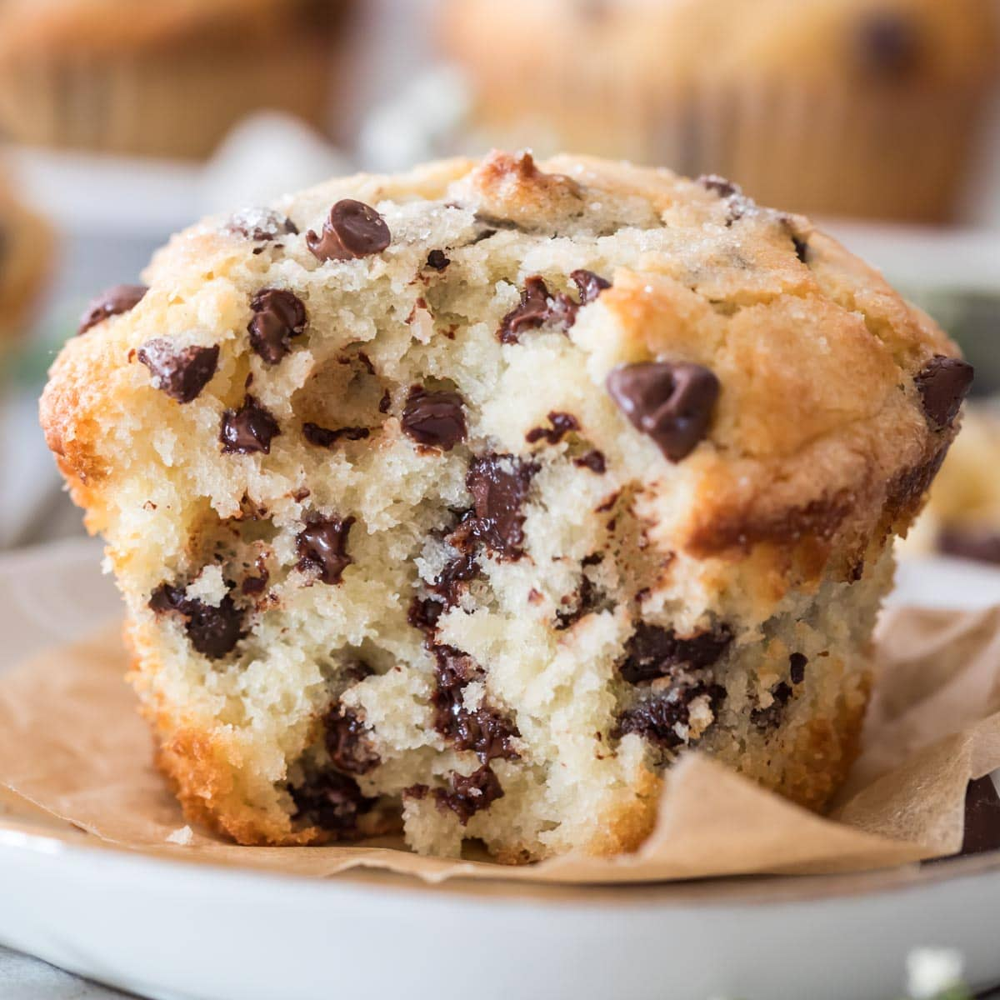

Chocolate Chip Muffins

Description
These are hands down the best chocolate chip muffins that I have baked at home. Every time I make them, while following the instructions, they turn out perfectly, and I can easily 2-3 without even noticing. If you're trying to drop some pounds, these aren't for you.
Ingredients
- 3/4 Cup Butter - Softened
- 3/4 Cup Sugar
- 2 Eggs
- 1 Tbs Vanilla Extract
- 1 2/3 Cups Flour - Well packed
- 2 tsp baking powder
- 1/2 tsp baking soda
- 12 Cup Greek Yogurt (plain)
- 1/4 tsp Salt
- 1 1/4 Cups Mini Chocolate Chips
Steps
- Cream the butter and sugar for two minutes till light and fluffy.
- Add in eggs and vanilla extract and cream a few more minutes till mixture is fluffy and smooth again.
- In a small bowl, mix together the flour, baking powder, baking soda, and salt.
- Alternate adding this mixture with the sour cream to the machine, starting and ending with the dry ingredients.
- Don't over-mix! Stir in the chocolate chips last.
- OUsing a large cookie scoop, evenly drop batter into the muffin holders, filling 3/4 full. Sprinkle extra chocolate chips on top if desired.
- Bake for 15-22 minutes (varies depending on muffin liners and size), or until a toothpick inserted comes out with a few moist crumbs. Don't over bake.